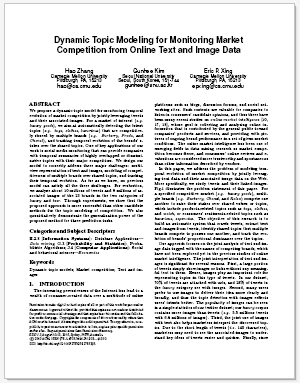
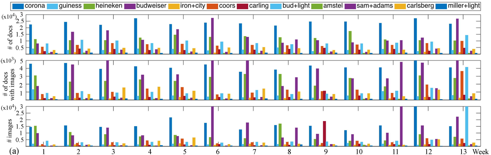
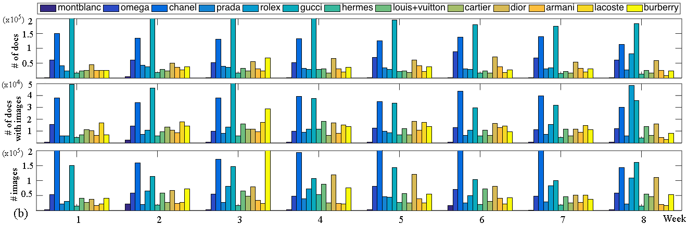
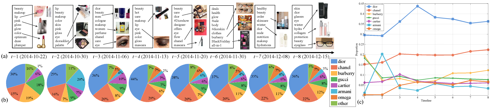
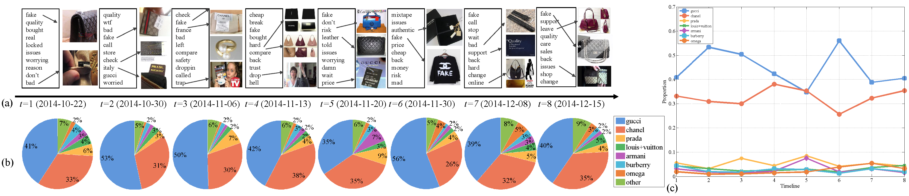
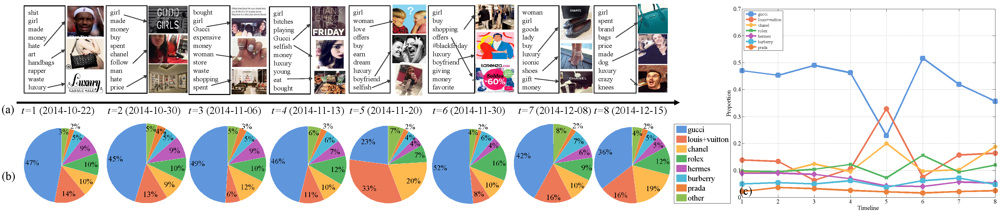
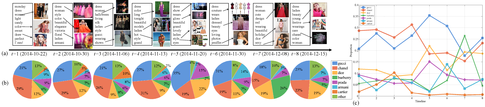

<!DOCTYPE html PUBLIC "-//W3C//DTD HTML 4.01 Transitional//EN" "http://www.w3.org/TR/html4/loose.dtd">
<html><head><meta http-equiv="Content-Type" content="text/html; charset=UTF-8">

<link href="http://www.cse.cuhk.edu.hk/~leojia/projects/dblurdetect/main.css" rel="stylesheet" media="all">
<meta name="description" content="Brand Competition">
<meta name="keywords" content="Brand Competition, Dynamic Topic Modeling, Visualization, Market Intelligence, Vision, Graphical Models">
<title>Brand Competition</title>
</head>

<body>
<br><br>
<h2 class="auto-style1">
Dynamic Topic Modeling for Monitoring Market Competition from Online Text and Image Data</h2>
<p class="auto-style7" align="center"><a href="http://cs.cmu.edu/~hzhang2/">Hao Zhang</a><sup><small>1</small></sup>&nbsp;&nbsp;&nbsp;&nbsp; 
<a href="http://www.cs.cmu.edu/~gunhee/">Gunhee Kim</a><sup><small>2</small></sup>&nbsp;&nbsp;&nbsp;&nbsp; 
<a href="http://www.cs.cmu.edu/~epxing/">Eric P. Xing</a><sup><small>1</small></sup></p>
<p class="auto-style7" align="center">Carnegie Mellon University<sup><small>1</small></sup><br>
Seoul National University<sup><small>2</small></sup></p>
<p align="left">&nbsp;</p>

<p class="auto-style3" align="left">(a) Input is a large collection of tweets and their associated images that are retrieved by the names of competing brands in a market of interest. 
(b) As output we aim at identifying the topics that are shared by multiple brands, and track the evolution of topics and proportion of brands over the topics. </p>
<p class="auto-style5">&nbsp;</p>

<p id="downloads" ,="" class="auto-style4"><strong>Downloads</strong></p>
<table cellspacing="4" cellpadding="2" border="0" style="width: 90%">
<tbody><tr colspan="2">
<td align="center" valign="center">
</td>
<td align="left" class="auto-style5">
"Dynamic Topic Modeling for Monitoring Market Competition from Online Text and Image Data"<br>
Hao Zhang, Gunhee Kim, Eric P. Xing <br>
ACM SIGKDD Conference on Knowledge Discovery and Data Mining (<b>KDD</b>), 2015<br><br>
&nbsp;&nbsp;
[<a href="projectpage/kdd15_topic_marketcomp.pdf">Paper</a>]<br>
<!--&nbsp; [<a href="http://www.cs.cmu.edu/~hzhang2">Code (Comming Soon)</a>]--> 
 &nbsp;[<a href="projectpage/kdd15_brand_competition_slides.pdf">slides</a>] <br>
 &nbsp;[<a href="projectpage/kdd15_brand_competition_poster.pdf">poster</a>] <br>
&nbsp; [<a href="brandcompetition.txt">bib</a>]
<br>
</td>
</tr>
</tbody></table>
<br>

<p class="style2"><strong><span class="auto-style6">Abstract</span></strong></p>
<p class="auto-style5">We propose a dynamic topic model for monitoring temporal evolution of market competition by jointly leveraging tweets and their associated images.
For a market of interest (e.g. <em>luxury goods</em>), we aim at automatically  detecting the latent topics (e.g. <em>bags, clothes, luxurious</em>) that are competitively 
shared by multiple brands (e.g. <em>Burberry, Prada</em>, and <em>Chanel</em>), and tracking temporal evolution of the brands' stakes over the shared topics.
One of key applications of our work is social media monitoring that can provide companies with temporal summaries of highly overlapped or discriminative topics with their major competitors.
We design our model to correctly address three major challenges: multi-view representation of text and images, modeling of competitiveness of multiple brands over shared topics, and tracking their temporal evolution.
As far as we know, no previous model can satisfy all the three challenges.
For evaluation, we analyze about 10 millions of tweets and 8 millions of associated images of the 23 brands in the two categories of <em>luxury</em> and <em>beer</em>.
Through experiments, we show that the proposed approach is more successful than other candidate methods for the topic modeling of competition.
We also quantitatively demonstrate the generalization power of the proposed method for three prediction tasks.</p>
<p class="auto-style5">&nbsp;</p>

<p class="auto-style4" id="P1"><strong>Methods</strong></p>
<p class="auto-style5" align="left">Our model is designed based on our previous Sparse Topical Coding (STC) framework, which is a topic model that can directly control the posterior sparsity. 
However, our model signicantly extends the STC in several aspects. First, we update the STC to be a dynamic model so that it handles the streams of tweets. 
Second, we extend to jointly leverage two complementary information modalities, text and associated images. Finally, we address an unexplored problem of detecting 
and tracking the topics that are competitively shared by multiple brands. All of them can be regarded as novel and nontrivial improvement of our method. For more 
details, please refer to section 3.2 of our paper.</p>
<p class="auto-style5">&nbsp;</p>

<p class="auto-style4" id="results"><strong>Dataset</strong></p>


<p class="auto-style3" align="left">Statistics of our newly collected twitter dataset on the timeline. We report the numbers of (tweets, tweets
with images, images) from top to bottom. (a) The Beer corpus = (1091369, 231318, 829207) (b) The Luxury corpus = (5511887, 935903, 6606125)</p>
<p class="auto-style5">&nbsp;</p>

<p class="auto-style4" id="P2"><strong>Model Evaluation</strong></p>
<p class="auto-style5">
Overall, we evaluate our model from four aspects. First, we qualitatively and quantitatively evaluate the quality of learned text and visual topics (See section 5.2.1). Second,
we show how our model can simultaneously monitor topic evolution and market competition along with time, compared to some baseline methods (Section 5.2.2). Third, we
design three prediction methods based on our model, to show the generalization power of our model for unseen documents (Section 5.3). Finally, we conduct internal comparisons 
and provide some analysis on our model (Section 5.4).
</p>
<p class="auto-style5">&nbsp;</p>

<p class="auto-style4"><strong>Monitoring Brand Competition</strong></p>
<p class="auto-style5">Given social media data of multiple brands, our model can solve the following three tasks, from easy to difficult: (1) At one time slice, we monitor their 
occupations on latent topics. (2) Along the timeline, we monitor the trend of each brand's occupation over the topics. (3) Along the timeline, we monitor
the global competition trends between multiple brands. As another application, our method can be partly used for sentiment analysis because the detected
topics can be positive or negative. That is, multiple brands competes one another not only on positive topics (e.g. multiple cosmetics brands compete on the health+beauty topic)
but also negative topics (e.g. multiple beer brands compete on the drunk+driving topic). The following figures present several examples we discovered from our crawled data.</p>
<table align=center>
	<tr><td></td></tr>
    <tr><td><p class="auto-style3">Topic: makeup+health+beauty</p></td></tr>

	<tr><td></td></tr>
    <tr><td><p class="auto-style3">Topic: fake+bad</p></td></tr>

    <tr><td></td></tr>
    <tr><td><p class="auto-style3">Topic: girl+waste</p></td></tr>
    	
    <tr><td></td></tr>
    <tr><td><p class="auto-style3">Topic: woman+dress</p></td></tr>
</table>
<p class="auto-style5">&nbsp;</p>

<p>&nbsp;</p>
<p>&nbsp;</p>
<p class="auto-style4" id="P3"><strong>Acknowledgement</strong></p>
<p class="auto-style5">This work is supported by NSF Award IIS447676. The authors thank NVIDIA for GPU donations.</p>
<p class="auto-style5">&nbsp;</p>
</body></html>